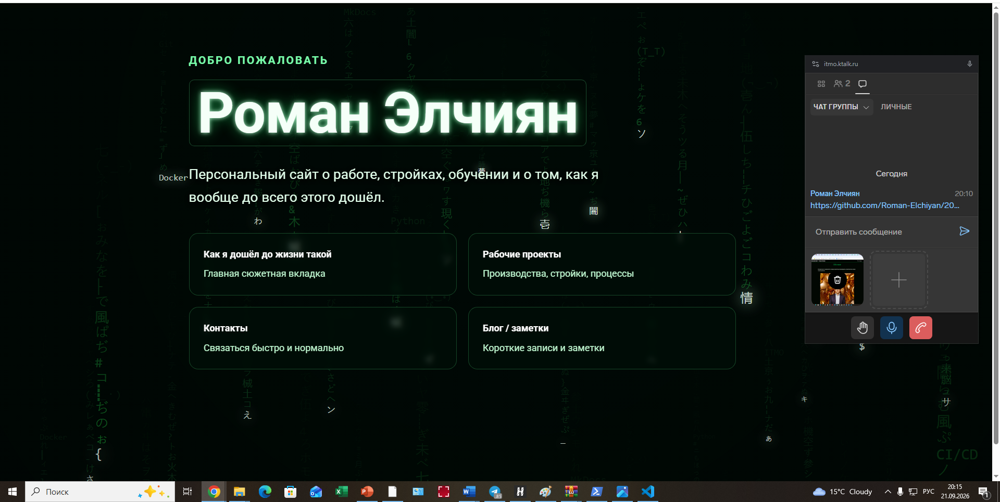
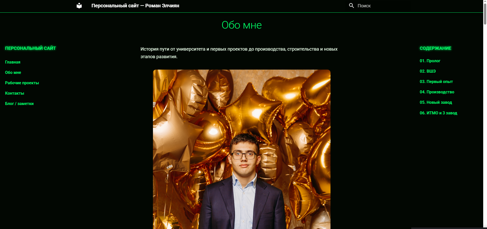
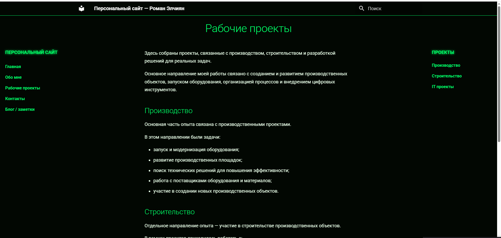
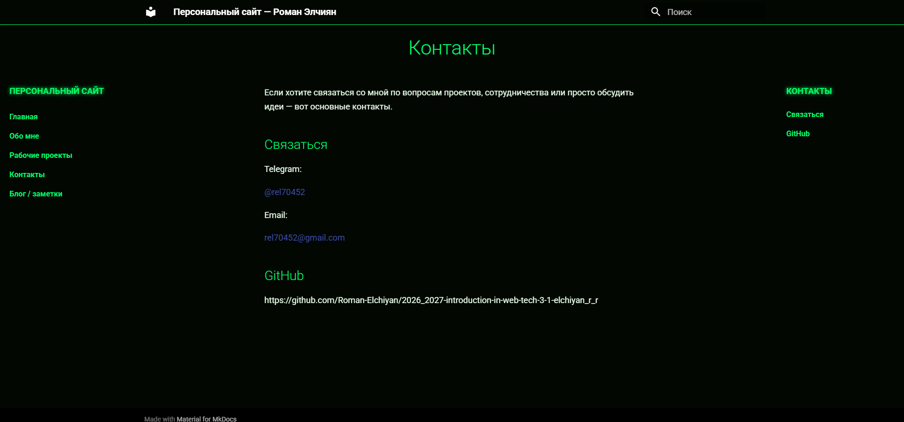
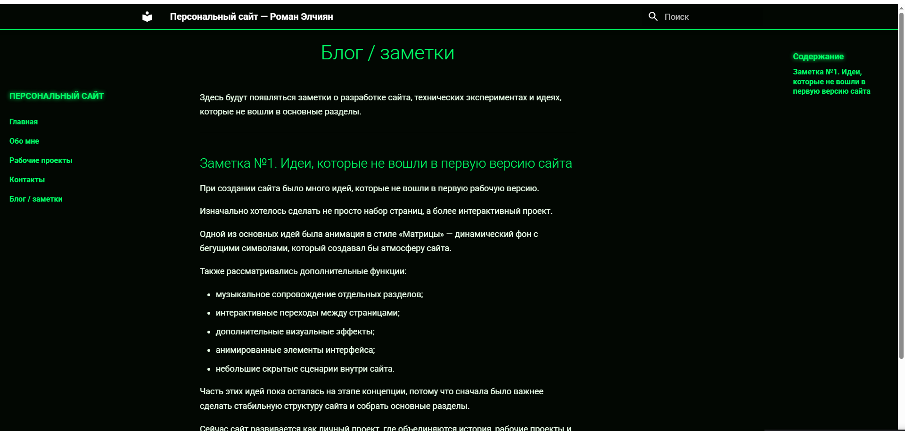

Date of create: 21.09.2026
Date of finished: 21.09.2026
Курсовая работа. Создание персонального сайта с использованием MkDocs
Цель работы
Создать персональный сайт на MkDocs, настроить тему Material и навигацию, добавить страницы с информацией об авторе и проектах, оформить сайт с помощью Markdown, CSS и JavaScript и настроить публикацию через GitHub Pages.
1. Подготовка проекта
Для работы сайта используются Python, MkDocs и тема Material for MkDocs.
Установка компонентов:
python --version
python -m pip install mkdocs
python -m pip install mkdocs-material
python -m mkdocs --version
python --version проверяет установленную версию Python. Две следующие команды устанавливают MkDocs и тему Material. Последняя команда подтверждает, что MkDocs доступен для запуска.
Первоначальное создание проекта выполняется командами:
mkdir coursework
cd coursework
python -m mkdocs new .
После mkdocs new создаются файл конфигурации mkdocs.yml и каталог docs для страниц сайта.
Основная структура проекта:
coursework/
├── docs/
│ ├── index.md
│ ├── story.md
│ ├── projects.md
│ ├── experiments.md
│ ├── now.md
│ ├── contacts.md
│ ├── blog/
│ │ └── index.md
│ └── assets/
│ ├── data/
│ ├── images/
│ ├── javascripts/
│ ├── stylesheets/
│ └── videos/
├── tools/
├── .github/workflows/deploy.yml
└── mkdocs.yml
Markdown-файлы содержат текст страниц. Каталог assets используется для стилей, JavaScript, изображений, видео и данных Matrix-анимации. В tools находятся Python-скрипты подготовки стартовых сцен.
2. Настройка MkDocs
В корневом файле mkdocs.yml указаны название, описание, автор и адрес сайта. Также подключена тема Material с русским языком интерфейса.
site_name: Персональный сайт — Роман Элчиян
site_description: "Персональный сайт в рамках курса «Введение в веб технологии»"
site_author: "Эльчиян Роман Романович"
site_url: "https://roman70452.github.io/2026_2027-introduction-in-web-tech-3-1-elchiyan_r_r/"
theme:
name: material
language: ru
nav:
- Главная: index.md
- Как я дошёл до жизни такой: story.md
- Рабочие проекты: projects.md
- Факапы, эксперименты и побочные эффекты: experiments.md
- Сейчас: now.md
- Контакты: contacts.md
- Блог / заметки: blog/index.md
extra_css:
- assets/stylesheets/site.css
- assets/stylesheets/matrix.css
- assets/stylesheets/story.css
extra_javascript:
- assets/javascripts/matrix.js
Блок nav задаёт порядок страниц в меню. Через extra_css подключены общие стили, оформление Matrix-анимации и страницы с историей. Через extra_javascript подключён файл matrix.js.
3. Создание страниц
Главная страница
Главная страница находится в docs/index.md. Стандартная боковая навигация и оглавление на ней скрыты с помощью параметров в начале файла:
---
hide:
- navigation
- toc
---
Основная часть страницы состоит из холста для анимации, имени автора, короткого описания и карточек со ссылками на разделы.
<div class="matrix-hero">
<canvas id="matrix-canvas" aria-hidden="true"></canvas>
<div class="matrix-overlay">
<p class="matrix-eyebrow">ДОБРО ПОЖАЛОВАТЬ</p>
<h1 class="matrix-title">Роман Элчиян</h1>
<p class="matrix-lead">
Персональный сайт о работе, стройках, обучении, экспериментах,
факапах и о том, как я вообще до всего этого дошёл.
</p>
<div class="home-links">
<a class="home-link-card" href="story/">
<span class="home-link-title">Как я дошёл до жизни такой</span>
<span class="home-link-text">Главная сюжетная вкладка</span>
</a>
<a class="home-link-card" href="projects/">
<span class="home-link-title">Рабочие проекты</span>
<span class="home-link-text">Производства, стройки, процессы</span>
</a>
<a class="home-link-card" href="contacts/">
<span class="home-link-title">Контакты</span>
<span class="home-link-text">Связаться быстро и нормально</span>
</a>
<a class="home-link-card" href="blog/">
<span class="home-link-title">Блог / заметки</span>
<span class="home-link-text">Короткие записи и заметки</span>
</a>
</div>
</div>
</div>
canvas служит отдельным слоем для отрисовки Matrix-анимации. Текст и ссылки остаются обычными HTML-элементами и располагаются поверх него.
Страница «Как я дошёл до жизни такой»
В story.md описаны основные этапы обучения и работы: поступление в НИУ ВШЭ, работа в закупках, производственные задачи, участие в строительстве нового завода и поступление в магистратуру ИТМО.
Для структуры страницы используются заголовки Markdown:
# Как я дошёл до жизни такой?
## Пролог
## ВШЭ
## Первый опыт
## Производство: теория закончилась
## Новый завод
## Стройка
## Завершение этапа
## Послание от руководства
## ИТМО
## Что осталось после этого пути
На странице применены абзацы, маркированные списки, цитаты и выделение текста.
План был понятный:
> Университет → диплом → работа → спокойная взрослая жизнь.
Но потом жизнь решила добавить несколько дополнительных уровней сложности:
- ковид;
- смену университетов;
- производство;
- стройки;
- новые проекты;
- увольнения;
- собственные решения.
**Как я вообще дошёл до этого?**
Изображения размещены в отдельных контейнерах, которым назначено общее оформление:
<div class="story-image">
<img src="/assets/images/about/3.png" alt="НИУ ВШЭ">
</div>
Видеозапись подключена с помощью элемента video:
<div class="story-video">
<video controls>
<source src="/assets/videos/about/10.mp4" type="video/mp4">
</video>
</div>
Атрибут controls добавляет стандартные кнопки управления воспроизведением.
Страница проектов
Страница projects.md разделена на три направления: производство, строительство и IT-проекты.
# Рабочие проекты
## Производство
- запуск и модернизация оборудования;
- развитие производственных площадок;
- поиск технических решений для повышения эффективности;
- работа с поставщиками оборудования и материалов;
- участие в создании новых производственных объектов.
## Строительство
- подготовка новых площадок;
- взаимодействие с подрядчиками;
- контроль этапов реализации;
- решение технических и организационных вопросов.
## IT проекты
- веб-разработка;
- создание персональных и учебных проектов;
- Docker и контейнеризация;
- CI/CD процессы;
- автоматизация рутинных задач.
Страница контактов
На странице contacts.md указаны Telegram, электронная почта и ссылка на репозиторий GitHub.
# Контакты
## Связаться
Telegram: @rel70452
Email: [rel70452@gmail.com](mailto:rel70452@gmail.com)
## GitHub
https://github.com/Roman-Elchiyan/2026_2027-introduction-in-web-tech-3-1-elchiyan_r_r
Блог
В docs/blog/index.md добавлена первая заметка о разработке сайта и идеях, которые рассматривались во время работы.
# Блог / заметки
Здесь будут появляться заметки о разработке сайта, технических экспериментах и идеях, которые не вошли в основные разделы.
## Заметка №1. Идеи, которые не вошли в первую версию сайта
Также рассматривались дополнительные функции:
- музыкальное сопровождение отдельных разделов;
- интерактивные переходы между страницами;
- дополнительные визуальные эффекты;
- анимированные элементы интерфейса;
- небольшие скрытые сценарии внутри сайта.
4. Дополнительные возможности
Изображения и видео
Материалы страницы «О себе» хранятся отдельно от текста:
docs/assets/images/about/1.jpg
docs/assets/images/about/2.png
docs/assets/images/about/3.png
...
docs/assets/images/about/11.png
docs/assets/videos/about/10.mp4
Такое разделение позволяет заменять изображения и видео без изменения структуры Markdown-страницы.
Поиск
MkDocs использует стандартный поисковый плагин. Отдельная настройка plugins не задана, поэтому поиск подключается автоматически вместе с темой Material. При сборке создаётся файл site/search/search_index.json.
Matrix-анимация
Анимация реализована в docs/assets/javascripts/matrix.js с помощью HTML Canvas. Скрипт получает холст по его идентификатору и создаёт двумерный контекст рисования:
const canvas = document.getElementById("matrix-canvas");
if (!canvas) return;
const ctx = canvas.getContext("2d", { alpha: false });
if (!ctx) return;
При открытии страницы загружается индекс подготовленных сцен. Скрипт старается не выбирать ту же сцену, которая использовалась при предыдущем открытии.
const indexUrl = new URL(
"startup_scene_index.json",
new URL(tuning.startupSceneUrl, document.baseURI)
);
const response = await fetch(indexUrl);
const index = await response.json();
const previousKey = localStorage.getItem("matrix-startup-last-key-v4");
const alternatives = index.scenes.filter(scene => scene.key !== previousKey);
const selected = randomItem(alternatives.length ? alternatives : index.scenes);
После загрузки сцены выполняется первый вызов отрисовки, затем запускается цикл анимации:
drawCurrentScene();
previousTime = 0;
animationId = requestAnimationFrame(render);
Стартовые данные подготавливаются тремя Python-скриптами:
python tools/generate_startup_presets.py
python tools/select_startup_scene.py balanced
python tools/check_startup_presets.py
generate_startup_presets.py создаёт наборы кандидатов. select_startup_scene.py формирует готовые сцены и выбирает резервную сцену. check_startup_presets.py проверяет структуру JSON, количество потоков, допустимые координаты и конфликты размещения.
5. Стилизация сайта
Главная страница оформлена в тёмно-зелёной цветовой схеме. Холст с анимацией, затемнение и содержимое расположены отдельными слоями.
#matrix-canvas {
position: absolute;
top: 0;
left: 0;
z-index: 1;
width: 100%;
height: 100%;
display: block;
pointer-events: none;
}
.matrix-hero::after {
content: "";
position: absolute;
inset: 0;
z-index: 2;
background: radial-gradient(
circle at 50% 30%,
rgba(0, 25, 10, 0.08),
rgba(0, 8, 4, 0.22) 55%,
rgba(0, 4, 2, 0.4) 100%
);
pointer-events: none;
}
Текстовый блок имеет z-index: 3, поэтому находится выше анимации и затемнения. Карточки разделов размещаются с помощью CSS Grid:
.home-links {
display: grid;
grid-template-columns: repeat(2, minmax(260px, 1fr));
gap: 1rem;
max-width: 1050px;
}
@media (max-width: 800px) {
.home-links {
grid-template-columns: 1fr;
}
}
На широком экране отображаются две колонки, на экране шириной до 800 пикселей — одна.
Анимация отключается, если пользователь включил в системе уменьшение движения:
@media (prefers-reduced-motion: reduce) {
#matrix-canvas {
display: none;
}
}
6. Тестирование и публикация
Локальный запуск
Для запуска сайта из каталога с mkdocs.yml используется команда:
python -m mkdocs serve
После запуска сайт доступен по адресу:
http://127.0.0.1:8000/
Проверка сборки
Обычная сборка статического сайта выполняется командой:
python -m mkdocs build
Для дополнительной проверки применена строгая сборка:
python -m mkdocs build --strict
Строгая сборка корневой конфигурации завершилась успешно:
INFO - Cleaning site directory
INFO - Building documentation to directory: site
INFO - Documentation built in 0.28 seconds
Статические HTML-, CSS- и JavaScript-файлы создаются в каталоге site.
Данные Matrix-анимации проверены отдельно:
Scene: streams=80, sizes={'large': 10, 'medium': 50, 'small': 20}, phases={'middle': 27, 'early': 26, 'late': 27}, conflicts=0
Ready scenes: 100
Bad offsets: 0
Validation: OK
Проверка подтвердила наличие 100 готовых сцен. В выбранной сцене находится 80 потоков, конфликтов размещения и недопустимых смещений не обнаружено.
Автоматическая публикация
Публикация настроена через GitHub Actions. Workflow находится в .github/workflows/deploy.yml.
name: Deploy MkDocs site
on:
push:
branches:
- main
permissions:
contents: write
jobs:
deploy:
runs-on: ubuntu-latest
steps:
- name: Checkout repository
uses: actions/checkout@v4
- name: Setup Python
uses: actions/setup-python@v5
with:
python-version: 3.x
- name: Install dependencies
run: pip install mkdocs-material
- name: Build site
run: mkdocs build
- name: Deploy
uses: peaceiris/actions-gh-pages@v4
with:
github_token: ${{ secrets.GITHUB_TOKEN }}
publish_dir: ./site
Workflow запускается после отправки изменений в ветку main. Сначала GitHub Actions получает файлы репозитория, устанавливает Python и Material for MkDocs, затем выполняет сборку. Содержимое каталога site публикуется в ветку GitHub Pages с помощью peaceiris/actions-gh-pages.
Результат
Создан персональный сайт на MkDocs с темой Material и русским интерфейсом. Настроено меню из семи разделов, добавлены главная страница, рассказ об авторе, проекты, контакты и блог. В содержимом используются заголовки, списки, цитаты, ссылки, изображения и видео.
Главная страница дополнена собственной Matrix-анимацией, адаптивными карточками и отдельными стилями. Стартовые сцены анимации формируются заранее и проходят автоматическую проверку. Сайт успешно собирается командой mkdocs build --strict, а публикация в GitHub Pages выполняется автоматически после обновления ветки main.
7. Скриншоты результата работы
Ниже представлены основные результаты работы сайта после завершения разработки и настройки публикации.
Главная страница сайта
Главная страница содержит приветственный блок с именем автора, описанием проекта и навигационными карточками основных разделов сайта.

Раздел «Обо мне»
Страница содержит описание личного пути, этапов обучения, опыта работы и основных этапов развития.

Раздел «Рабочие проекты»
На странице представлены основные направления проектов: производство, строительство и IT-разработка.

Раздел «Контакты»
Страница содержит способы связи и ссылку на репозиторий проекта GitHub.

Раздел «Блог / заметки»
В разделе размещаются дополнительные записи о процессе разработки сайта, экспериментах и идеях, которые не вошли в основные страницы.
